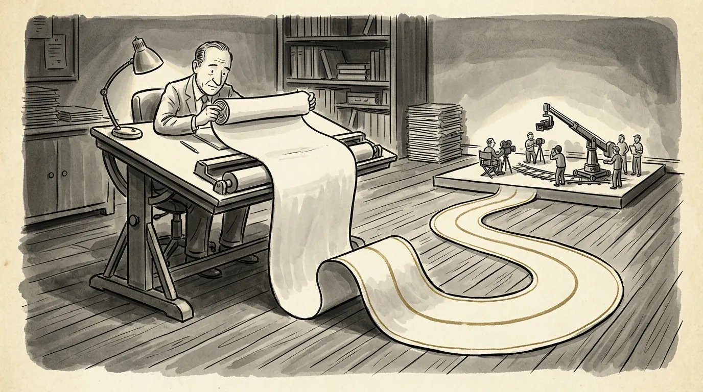

How to write a film treatment that gets read
A treatment is your movie told as a short story, and it may be the first version of your idea a buyer ever reads. Here's how to write one that makes them want the script.


What a film treatment is
A film treatment is your movie told as a short story, in prose, before it exists as a screenplay. Learning how to write a film treatment means learning to walk a reader through the whole story from beginning to end, in present tense, with the main characters, the major turns and the ending all on the page.
Start with who will read it. A treatment usually has one of two jobs. Either it helps sell a story before the script exists, or it helps a writer and a producer agree on the story before anyone spends months on pages. The first kind is short and persuasive. The second is longer and works more like a blueprint.
Treatments are real literary material in the business, not a homework exercise. The WGA's 2026 schedule of minimums sets its own pay rates for treatments; the minimum for an original treatment on a high-budget film is $69,228 for the period that began May 2, 2026. Buyers pay for treatments because a good one tells them whether there's a movie here.
Treatment vs. synopsis, outline, beat sheet and pitch doc
The difference is purpose: a treatment is written to be read by someone else and enjoyed, while outlines and beat sheets are built for the writer. People use these names loosely, so here's how I separate them.
- Synopsis: a plain summary of the plot, often a page or less. Coverage includes one. It reports the story; it doesn't sell it.
- Treatment: the full story in readable prose, with tone, character and the ending. Its job is to make someone want the movie.
- Outline: a working map of scenes or sequences, often in shorthand, for you and maybe a producer. I cover it in how to outline a screenplay.
- Beat sheet: the key structural turns as a list: the catalyst, the midpoint, the low point, the climax. Skeleton, not skin.
- Pitch doc: a leave-behind that supports a spoken pitch, with concept, characters, tone and sometimes images. More common in TV.
A treatment can borrow from all of them. What it can't do is read like a list. If a reader can see the bullet points under your paragraphs, you've written an outline in disguise.
How long a film treatment should be
There's no fixed length, but a treatment meant to sell a story usually works best at about 2 to 5 pages, while a development treatment can run 10, 20 or more. You'll see ranges like 2 to 10 pages quoted online, and that's fair. The honest answer is that length follows purpose.
- Selling or querying: keep it short. A producer should be able to read it in one sitting, between meetings. Two to five pages is a good target.
- Development: longer is fine. When you've been hired, or you're working out the story with a producer, a treatment can go scene by scene and run well past ten pages.
- Scriptment: the far end. James Cameron has written treatments so detailed, with scene headings and dialogue, that they approach the length of a script. Final Draft has collected several, along with treatments by Stanley Kubrick, Gus Van Sant and Ted Elliott and Terry Rossio. Read a few. They're the best education on this format you can get for free.
If nobody has asked for a specific length, write it short. You can always send more. You can't un-bore a reader.
How to write a film treatment, step by step
Write it in present tense and third person, in clean prose paragraphs, and tell the whole story, including the ending. Here's the order I'd work in.
- Start with the title, genre and logline. One line at the top tells the reader what kind of movie they're about to read. If you don't have a logline yet, write that first. A treatment built on a fuzzy premise only gets fuzzier.
- Introduce your protagonist in action. Don't open with a character bio. Open with them doing something that shows who they are and what's wrong in their life.
- Follow the shape of the movie. The setup, the event that kicks off the story, the escalating middle, the midpoint shift, the low point, the climax and the resolution. You don't need act headings. The reader should feel the turns without seeing the scaffolding. If the shape is still blurry, my three-act structure examples can help.
- Stay on the main line. Cover the A story and the one or two relationships that matter most. Subplots get a sentence, if they earn one.
- Land the ending. Tell the reader exactly how it ends. A treatment that teases ("and then everything changes...") reads like a writer who doesn't know yet.
- Read it out loud. Wherever you stumble, the reader will too.
Present tense matters more than it sounds. "She opens the door" puts the reader in the theater. "She opened the door" puts them in a book report.
Write it the way the movie feels
The prose of a treatment should carry the tone of the film: a comedy treatment should be funny, and a thriller treatment should be tense. This is the part most writers skip, and it's the part that sells.
Executives read treatments the way they read everything: fast, and looking for a reason to keep going. A treatment that's accurate but flat tells them the plot. A treatment with the right rhythm tells them what it will feel like to watch. Short sentences when things turn dangerous. A dry line where the comedy lands. You're not writing a novel, but you are writing.
The plot tells them what happens. The tone tells them why they'd buy a ticket.
What to leave out of a treatment
Leave out anything that doesn't move the main story or reveal the main characters. In a short treatment, every sentence is competing for room.
- Camera directions. No "we see," no angles, no "cut to." It's prose, not a shooting script.
- Most dialogue. Keep one line if it defines a character or a moment. Otherwise, describe what's said.
- Backstory dumps. Give the reader only the history they need for the story to make sense.
- Minor characters. If someone doesn't change the plot, they don't need a name.
- Casting and budget talk. Naming the star you want tells a reader you're thinking about the deal instead of the story.
- Explanations of theme. Let the events carry it. Don't announce it in a closing paragraph.
A short film treatment example
Here's the opening of an invented treatment, to show tense, tone and economy at work. The story and the town are made up for this post.
The reservoir above Harlan Springs, Nevada, has dropped forty feet in a year, and DANA REYES, the county's only hydrologist, is the one who has to keep explaining why. She's good with numbers and bad with people, which is why she lives alone and eats lunch in her truck. When the water falls low enough to expose the rooftops of the old town that was flooded to build the dam, Dana finds something no survey ever recorded: a pickup, sealed in silt, with a man still in the cab. The sheriff wants it filed as an old drowning. But the truck's registration sticker is from last spring, and the man inside is the engineer who signed the dam's most recent safety inspection.
Look at what's there: a protagonist with a flaw, a world under pressure, a hook, and a turn that makes you want the next paragraph. Now look at what isn't: camera angles, a page of Dana's childhood, a roll call of every deputy in town.
How to write a treatment for a TV series
A TV series treatment sells the show, not just one story, so it has to cover the world, the characters, the pilot and where the series goes after it. In television this document is often called a pitch document, a series overview or a show bible, and the terms overlap.
A film treatment tells one story with an ending. A series treatment has to prove there are seasons of stories in the premise. That changes what goes in it.
- Title, logline and format. Genre, episode length, and whether it's serialized or closer to a story-of-the-week show.
- The world. Where and when the show lives, and why this setting generates conflict week after week.
- The main characters. A paragraph each for the core ensemble, focused on what they want and what's in their way. Stick to the handful who drive the show.
- The pilot story. A short version of the pilot, written like a film treatment: present tense, the key turns, the ending.
- The season arc. Where the first season goes and how it ends. Don't withhold the ending to seem mysterious.
- Future seasons. A few lines on where the show could go next, so a buyer can see the engine keeps running.
Length varies even more than it does for features. A lean pitch document can be a few pages, while a full series bible can run past 30, with artwork and mood boards. For a writer without produced credits, the pilot script usually carries more weight than any document, so think of the series treatment as a companion to the script, not a replacement. My guide on how to write a TV pilot covers that side.
Common treatment mistakes
The most common mistake is a treatment that summarizes events without making anyone care about them. Close behind it:
- Hiding the ending. Mystery is for the audience. The reader needs to know you can land it.
- Too long for the job. A 25-page treatment sent cold is a request for someone's afternoon. Most readers won't give it.
- Past tense and passive voice. Both drain the energy from the page.
- Act headings and bullet points. They make a treatment read like homework.
- A passive protagonist. If things keep happening to your hero, a treatment exposes it faster than a script does. There are no scenes to hide behind.
- Selling adjectives instead of story. "A gripping, heart-pounding ride" is a claim. A scene that grips is proof.
One practical note: the WGA West Registry accepts treatments, synopses and outlines as well as scripts, and gives you a dated record of your material. Its own FAQ is clear that registration doesn't stop anyone from using a similar storyline or theme. When you're ready to take the story out, how to pitch a screenplay picks up from here.
Frequently asked questions
How long should a film treatment be?
There's no fixed rule. For selling a story, 2 to 5 pages is usually right; development treatments written with a producer can run 10 pages or much more.
Is a film treatment written in present tense?
Yes. Treatments are written in present tense and third person, the same way action lines are in a screenplay, so the story feels like it's happening as you read.
Should a treatment include dialogue?
Very little. One line is fine if it defines a character or a key moment; otherwise describe what's said in prose.
Do I need a treatment before I write the screenplay?
Not always. Many writers outline for themselves instead. A treatment is most useful when someone else needs to read and approve the story before the script exists.
How much does treatment analysis cost?
With me, treatment analysis is $350. I read your treatment myself and we go through it on a live call of one to two hours.